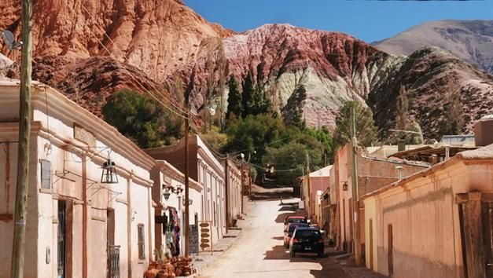
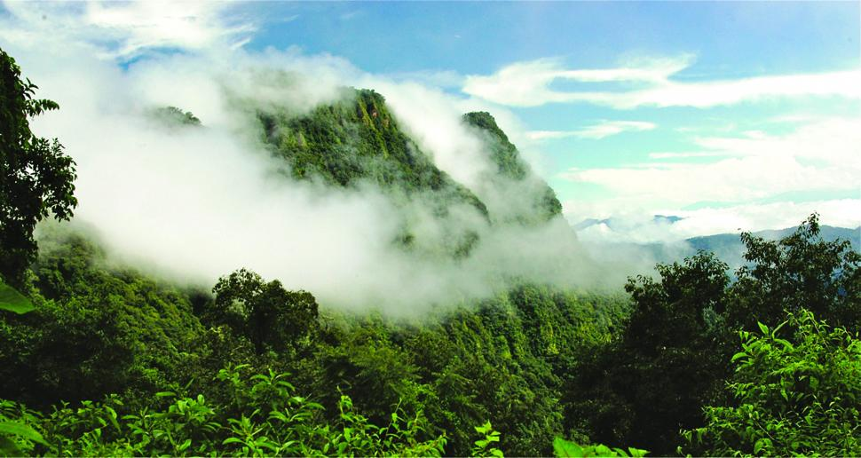
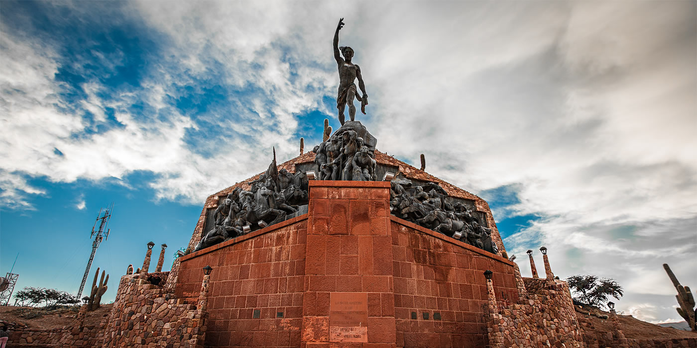

PURMAMARCA
Purmamarca es una localidad de la provincia de Jujuy, en el noroeste de Argentina. Se ubica en la base de un espectacular cerro multicolor llamado Cerro de los Siete Colores. Desde la villa, el sendero Paseo de los Colorados se dirige a los paisajes desérticos circundantes donde hay vistas de la montaña. Las casas de adobe bordean las calles y la Plaza 9 de Julio es sede de un mercado de artesanías popular. Cerca está la iglesia de Santa Rosa de Lima, de siglos de antigüedad.
irParque Nacional Calilegua
El Parque Nacional Calilegua fue creado en el año 1979 gracias a una donación de la empresa Ledesma de 76.300 hectáreas para conservar un sector representativo de las yungas o selvas de montaña. Las Yungas es uno de los ambientes ecológicos de mayor diversidad en el país junto con la selva misionera. Su relieve es sumamente quebrado con profundos cañadones labrados por ríos que descienden desde la Serranía de Calilegua, donde se destacan picos de más de 3.000 metros de altura como los Cerros Hermoso y Amarillo.Cuenta con 9 atractivos miradores, senderos y una bici senda. Se destaca el sendero Intercultural Guaraní que puede ser visitado con un guía originario que narrando en guaraní y español cuenta historias del pueblo Ava Guaraní.
irLaguna de yala

Las Lagunas de Yala es un sistema de seis espejos de agua (Los Noques, Alizar, El Comedero, Desaguadero, Rodeo y Larga) rodeados de cerros donde la exuberante vegetación disminuye por la altura. Forma parte de la zona núcleo (que abarca el 13%) de la Reserva de Biosfera de las Yungas. La RBYungas está ubicada en el sector Norte de Yungas en Argentina, en la Alta Cuenca del Río Bermejo. Ocupa una superficie de casi 1.33 millones de hectáreas de las Provincias de Salta y Jujuy. Fue creada en Noviembre de 2002, con el propósito de implementa acciones que ayuden a resolver problemas socio-económicos y ambientales, y contribuir con la conservación de las Yungas.
irHUMAHUACA
La ciudad de Humahuaca es Capital del departamento del mismo nombre, situada a 126 km. de San Salvador de Jujuy y a 2.939 msnm. Se puede llegar a ella por Ruta Nacional 9 totalmente pavimentada. Es cabecera de la Quebrada de Humahuaca, declarada por la UNESCO patrimonio de la Humanidad en la categoría Paisaje Cultural el 2 de Julio de 2003.
ir